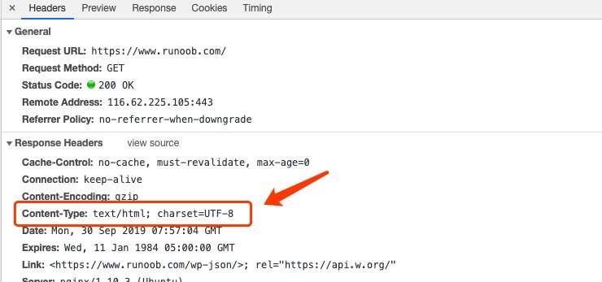

HTTP content-type
Content-Type (tipo de contenido), generalmente se refiere al Content-Type presente en las páginas web, utilizado para definir el tipo de archivo de red y la codificación de la página web, determina de qué forma y con qué codificación el navegador leerá este archivo. Esta es la razón por la que a menudo se ve que al hacer clic en algunas páginas PHP, el resultado es la descarga de un archivo o una imagen.
El encabezado Content-Type le dice al cliente el tipo de contenido del contenido que realmente se devuelve.
Formato de sintaxis:
Content-Type: text/html; charset=utf-8 Content-Type: multipart/form-data; boundary=something
Ejemplo:

Los tipos de formatos multimedia comunes son los siguientes:
- text/html: formato HTML
- text/plain: formato de texto plano
- text/xml: formato XML
- image/gif: formato de imagen gif
- image/jpeg: formato de imagen jpg
- image/png: formato de imagen png
Tipos de formato de medios que comienzan con application:
- application/xhtml+xml: formato XHTML
- application/xml: formato de datos XML
- application/atom+xml: formato de agregación Atom XML
- application/json: formato de datos JSON
- application/pdf: formato pdf
- application/msword: formato de documento Word
- application/octet-stream: datos de flujo binario (como las descargas de archivos comunes)
- application/x-www-form-urlencoded: el encType predeterminado en <form encType=””>, los datos del formulario se codifican en formato clave/valor y se envían al servidor (el formato predeterminado para enviar datos en formularios).
Otro formato multimedia común se utiliza al subir archivos:
- multipart/form-data: cuando se necesita cargar archivos en un formulario, se debe usar este formato.
Tabla de correspondencia de HTTP content-type
| Extensión de archivo | Content-Type(Mime-Type) | Extensión de archivo | Content-Type(Mime-Type) |
|---|---|---|---|
| .* (flujo binario, no se sabe el tipo de archivo de descarga) | application/octet-stream | .tif | image/tiff |
| .001 | application/x-001 | .301 | application/x-301 |
| .323 | text/h323 | .906 | application/x-906 |
| .907 | drawing/907 | .a11 | application/x-a11 |
| .acp | audio/x-mei-aac | .ai | application/postscript |
| .aif | audio/aiff | .aifc | audio/aiff |
| .aiff | audio/aiff | .anv | application/x-anv |
| .asa | text/asa | .asf | video/x-ms-asf |
| .asp | text/asp | .asx | video/x-ms-asf |
| .au | audio/basic | .avi | video/avi |
| .awf | application/vnd.adobe.workflow | .biz | text/xml |
| .bmp | application/x-bmp | .bot | application/x-bot |
| .c4t | application/x-c4t | .c90 | application/x-c90 |
| .cal | application/x-cals | .cat | application/vnd.ms-pki.seccat |
| .cdf | application/x-netcdf | .cdr | application/x-cdr |
| .cel | application/x-cel | .cer | application/x-x509-ca-cert |
| .cg4 | application/x-g4 | .cgm | application/x-cgm |
| .cit | application/x-cit | .class | java/* |
| .cml | text/xml | .cmp | application/x-cmp |
| .cmx | application/x-cmx | .cot | application/x-cot |
| .crl | application/pkix-crl | .crt | application/x-x509-ca-cert |
| .csi | application/x-csi | .css | text/css |
| .cut | application/x-cut | .dbf | application/x-dbf |
| .dbm | application/x-dbm | .dbx | application/x-dbx |
| .dcd | text/xml | .dcx | application/x-dcx |
| .der | application/x-x509-ca-cert | .dgn | application/x-dgn |
| .dib | application/x-dib | .dll | application/x-msdownload |
| .doc | application/msword | .dot | application/msword |
| .drw | application/x-drw | .dtd | text/xml |
| .dwf | Model/vnd.dwf | .dwf | application/x-dwf |
| .dwg | application/x-dwg | .dxb | application/x-dxb |
| .dxf | application/x-dxf | .edn | application/vnd.adobe.edn |
| .emf | application/x-emf | .eml | message/rfc822 |
| .ent | text/xml | .epi | application/x-epi |
| .eps | application/x-ps | .eps | application/postscript |
| .etd | application/x-ebx | .exe | application/x-msdownload |
| .fax | image/fax | .fdf | application/vnd.fdf |
| .fif | application/fractals | .fo | text/xml |
| .frm | application/x-frm | .g4 | application/x-g4 |
| .gbr | application/x-gbr | . | application/x- |
| .gif | image/gif | .gl2 | application/x-gl2 |
| .gp4 | application/x-gp4 | .hgl | application/x-hgl |
| .hmr | application/x-hmr | .hpg | application/x-hpgl |
| .hpl | application/x-hpl | .hqx | application/mac-binhex40 |
| .hrf | application/x-hrf | .hta | application/hta |
| .htc | text/x-component | .htm | text/html |
| .html | text/html | .htt | text/webviewhtml |
| .htx | text/html | .icb | application/x-icb |
| .ico | image/x-icon | .ico | application/x-ico |
| .iff | application/x-iff | .ig4 | application/x-g4 |
| .igs | application/x-igs | .iii | application/x-iphone |
| .img | application/x-img | .ins | application/x-internet-signup |
| .isp | application/x-internet-signup | .IVF | video/x-ivf |
| .java | java/* | .jfif | image/jpeg |
| .jpe | image/jpeg | .jpe | application/x-jpe |
| .jpeg | image/jpeg | .jpg | image/jpeg |
| .jpg | application/x-jpg | .js | application/x-javascript |
| .jsp | text/html | .la1 | audio/x-liquid-file |
| .lar | application/x-laplayer-reg | .latex | application/x-latex |
| .lavs | audio/x-liquid-secure | .lbm | application/x-lbm |
| .lmsff | audio/x-la-lms | .ls | application/x-javascript |
| .ltr | application/x-ltr | .m1v | video/x-mpeg |
| .m2v | video/x-mpeg | .m3u | audio/mpegurl |
| .m4e | video/mpeg4 | .mac | application/x-mac |
| .man | application/x-troff-man | .math | text/xml |
| .mdb | application/msaccess | .mdb | application/x-mdb |
| .mfp | application/x-shockwave-flash | .mht | message/rfc822 |
| .mhtml | message/rfc822 | .mi | application/x-mi |
| .mid | audio/mid | .midi | audio/mid |
| .mil | application/x-mil | .mml | text/xml |
| .mnd | audio/x-musicnet-download | .mns | audio/x-musicnet-stream |
| .mocha | application/x-javascript | .movie | video/x-sgi-movie |
| .mp1 | audio/mp1 | .mp2 | audio/mp2 |
| .mp2v | video/mpeg | .mp3 | audio/mp3 |
| .mp4 | video/mpeg4 | .mpa | video/x-mpg |
| .mpd | application/vnd.ms-project | .mpe | video/x-mpeg |
| .mpeg | video/mpg | .mpg | video/mpg |
| .mpga | audio/rn-mpeg | .mpp | application/vnd.ms-project |
| .mps | video/x-mpeg | .mpt | application/vnd.ms-project |
| .mpv | video/mpg | .mpv2 | video/mpeg |
| .mpw | application/vnd.ms-project | .mpx | application/vnd.ms-project |
| .mtx | text/xml | .mxp | application/x-mmxp |
| .net | image/pnetvue | .nrf | application/x-nrf |
| .nws | message/rfc822 | .odc | text/x-ms-odc |
| .out | application/x-out | .p10 | application/pkcs10 |
| .p12 | application/x-pkcs12 | .p7b | application/x-pkcs7-certificates |
| .p7c | application/pkcs7-mime | .p7m | application/pkcs7-mime |
| .p7r | application/x-pkcs7-certreqresp | .p7s | application/pkcs7-signature |
| .pc5 | application/x-pc5 | .pci | application/x-pci |
| .pcl | application/x-pcl | .pcx | application/x-pcx |
| application/pdf | application/pdf | ||
| .pdx | application/vnd.adobe.pdx | .pfx | application/x-pkcs12 |
| .pgl | application/x-pgl | .pic | application/x-pic |
| .pko | application/vnd.ms-pki.pko | .pl | application/x-perl |
| .plg | text/html | .pls | audio/scpls |
| .plt | application/x-plt | .png | image/png |
| .png | application/x-png | .pot | application/vnd.ms-powerpoint |
| .ppa | application/vnd.ms-powerpoint | .ppm | application/x-ppm |
| .pps | application/vnd.ms-powerpoint | .ppt | application/vnd.ms-powerpoint |
| .ppt | application/x-ppt | .pr | application/x-pr |
| .prf | application/pics-rules | .prn | application/x-prn |
| .prt | application/x-prt | .ps | application/x-ps |
| .ps | application/postscript | .ptn | application/x-ptn |
| .pwz | application/vnd.ms-powerpoint | .r3t | text/vnd.rn-realtext3d |
| .ra | audio/vnd.rn-realaudio | .ram | audio/x-pn-realaudio |
| .ras | application/x-ras | .rat | application/rat-file |
| .rdf | text/xml | .rec | application/vnd.rn-recording |
| .red | application/x-red | .rgb | application/x-rgb |
| .rjs | application/vnd.rn-realsystem-rjs | .rjt | application/vnd.rn-realsystem-rjt |
| .rlc | application/x-rlc | .rle | application/x-rle |
| .rm | application/vnd.rn-realmedia | .rmf | application/vnd.adobe.rmf |
| .rmi | audio/mid | .rmj | application/vnd.rn-realsystem-rmj |
| .rmm | audio/x-pn-realaudio | .rmp | application/vnd.rn-rn_music_package |
| .rms | application/vnd.rn-realmedia-secure | .rmvb | application/vnd.rn-realmedia-vbr |
| .rmx | application/vnd.rn-realsystem-rmx | .rnx | application/vnd.rn-realplayer |
| .rp | image/vnd.rn-realpix | .rpm | audio/x-pn-realaudio-plugin |
| .rsml | application/vnd.rn-rsml | .rt | text/vnd.rn-realtext |
| .rtf | application/msword | .rtf | application/x-rtf |
| .rv | video/vnd.rn-realvideo | .sam | application/x-sam |
| .sat | application/x-sat | .sdp | application/sdp |
| .sdw | application/x-sdw | .sit | application/x-stuffit |
| .slb | application/x-slb | .sld | application/x-sld |
| .slk | drawing/x-slk | .smi | application/smil |
| .smil | application/smil | .smk | application/x-smk |
| .snd | audio/basic | .sol | text/plain |
| .sor | text/plain | .spc | application/x-pkcs7-certificates |
| .spl | application/futuresplash | .spp | text/xml |
| .ssm | application/streamingmedia | .sst | application/vnd.ms-pki.certstore |
| .stl | application/vnd.ms-pki.stl | .stm | text/html |
| .sty | application/x-sty | .svg | text/xml |
| .swf | application/x-shockwave-flash | .tdf | application/x-tdf |
| .tg4 | application/x-tg4 | .tga | application/x-tga |
| .tif | image/tiff | .tif | application/x-tif |
| .tiff | image/tiff | .tld | text/xml |
| .top | drawing/x-top | .torrent | application/x-bittorrent |
| .tsd | text/xml | .txt | text/plain |
| .uin | application/x-icq | .uls | text/iuls |
| .vcf | text/x-vcard | .vda | application/x-vda |
| .vdx | application/vnd.visio | .vml | text/xml |
| .vpg | application/x-vpeg005 | .vsd | application/vnd.visio |
| .vsd | application/x-vsd | .vss | application/vnd.visio |
| .vst | application/vnd.visio | .vst | application/x-vst |
| .vsw | application/vnd.visio | .vsx | application/vnd.visio |
| .vtx | application/vnd.visio | .vxml | text/xml |
| .wav | audio/wav | .wax | audio/x-ms-wax |
| .wb1 | application/x-wb1 | .wb2 | application/x-wb2 |
| .wb3 | application/x-wb3 | .wbmp | image/vnd.wap.wbmp |
| .wiz | application/msword | .wk3 | application/x-wk3 |
| .wk4 | application/x-wk4 | .wkq | application/x-wkq |
| .wks | application/x-wks | .wm | video/x-ms-wm |
| .wma | audio/x-ms-wma | .wmd | application/x-ms-wmd |
| .wmf | application/x-wmf | .wml | text/vnd.wap.wml |
| .wmv | video/x-ms-wmv | .wmx | video/x-ms-wmx |
| .wmz | application/x-ms-wmz | .wp6 | application/x-wp6 |
| .wpd | application/x-wpd | .wpg | application/x-wpg |
| .wpl | application/vnd.ms-wpl | .wq1 | application/x-wq1 |
| .wr1 | application/x-wr1 | .wri | application/x-wri |
| .wrk | application/x-wrk | .ws | application/x-ws |
| .ws2 | application/x-ws | .wsc | text/scriptlet |
| .wsdl | text/xml | .wvx | video/x-ms-wvx |
| .xdp | application/vnd.adobe.xdp | .xdr | text/xml |
| .xfd | application/vnd.adobe.xfd | .xfdf | application/vnd.adobe.xfdf |
| .xhtml | text/html | .xls | application/vnd.ms-excel |
| .xls | application/x-xls | .xlw | application/x-xlw |
| .xml | text/xml | .xpl | audio/scpls |
| .xq | text/xml | .xql | text/xml |
| .xquery | text/xml | .xsd | text/xml |
| .xsl | text/xml | .xslt | text/xml |
| .xwd | application/x-xwd | .x_b | application/x-x_b |
| .sis | application/vnd.symbian.install | .sisx | application/vnd.symbian.install |
| .x_t | application/x-x_t | .ipa | application/vnd.iphone |
| .apk | application/vnd.android.package-archive | .xap | application/x-silverlight-app |
Haz clic para compartir notas
<p style="font-size:14px;">¡Las notas deben ser una extensión del contenido de este artículo!</p><br> <p style="font-size:12px;"><a href="../tougao.html" target="_blank">Puedes hacer clic aquí para enviar artículos</a></p> <p style="font-size:14px;"><a href="../w3cnote/runoob-user-test-intro.html" target="_blank">Cómo obtener el código de invitación de registro</a></p> <h3 class="text-muted"><i class="fa fa-info-circle" aria-hidden="true"></i> ¡Antes de compartir notas, debes <a href=";.html" class="runoob-pop">iniciar sesión</a>!</h3> <p><a href="../w3cnote/runoob-user-test-intro.html" target="_blank">Cómo obtener el código de invitación de registro</a></p>